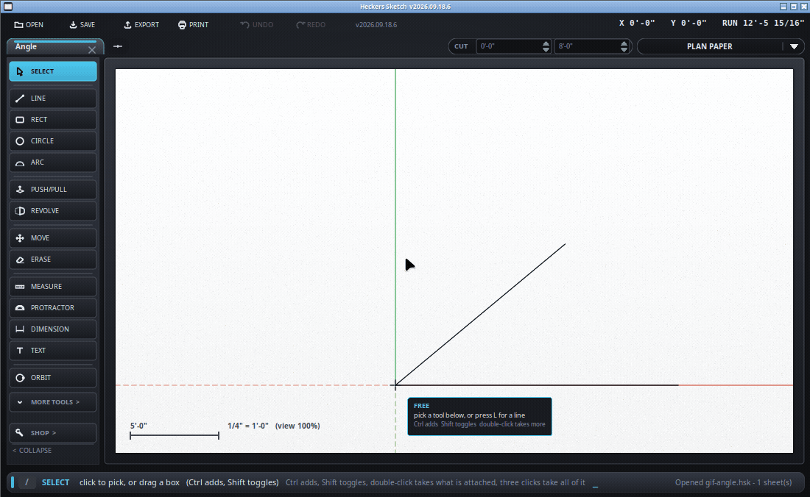

Lay a guide line at an angle.
No letter of its own - /protractor, or /angle, or pick it from MORE TOOLS.
It leaves a guide line at that angle. Draw against it, then rub it out.

45 or 22.5 - degrees.8:12 - a slope, eight in twelve, the way a roof pitch is
written on a drawing. Use it and the arithmetic is never yours to get
wrong.The arrow keys pick it before you start, and the color of the protractor says which - left or right for upright, up or down for flat. Without that it uses whatever plane your three points happened to lie in.
The guide it leaves is a thing you can pick: select it and press Delete, or right-click anywhere and choose Clear Guides to be rid of the lot. See the tape measure for the rest of what guides do.
A roof, mainly. Click the corner of the wall, click along the top of it,
then type 8:12 - and the guide is the rafter line, with none of
the arithmetic yours. The same trick lays out a splayed leg, a hopper, or
anything else where the drawing gives you a slope rather than an angle.
It measures as well as lays out: swing to something already drawn and the bar reads the angle without you having to leave a guide behind at all.